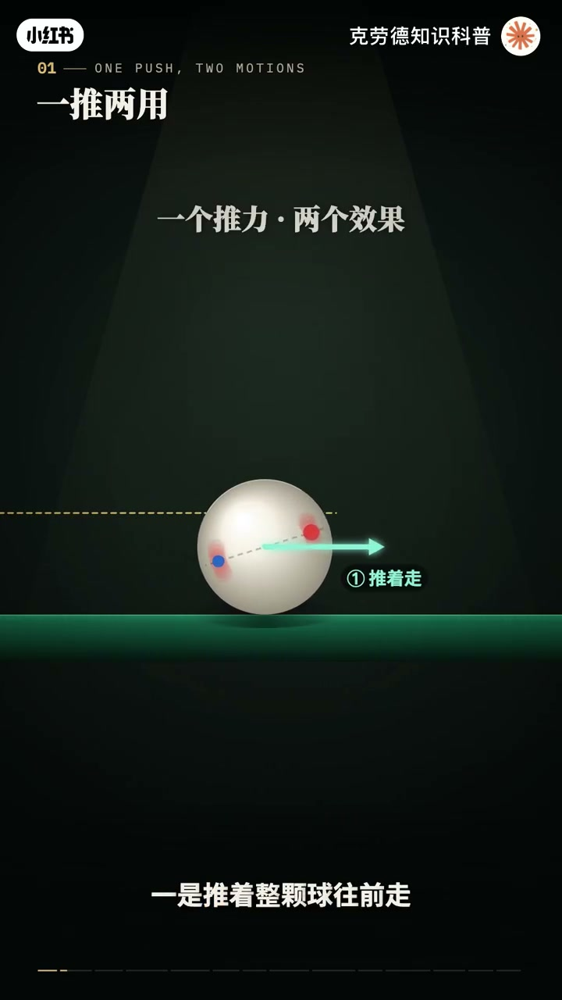
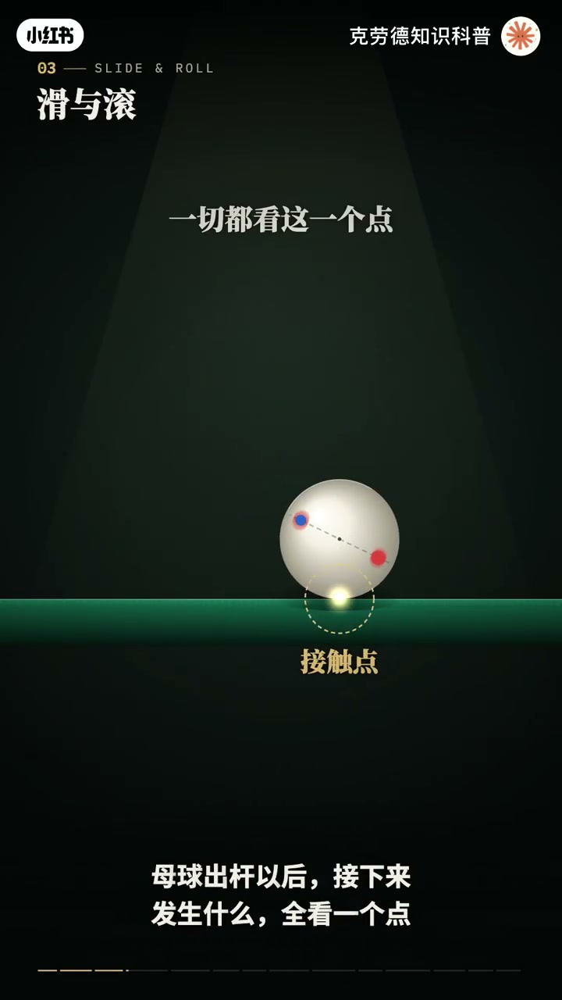
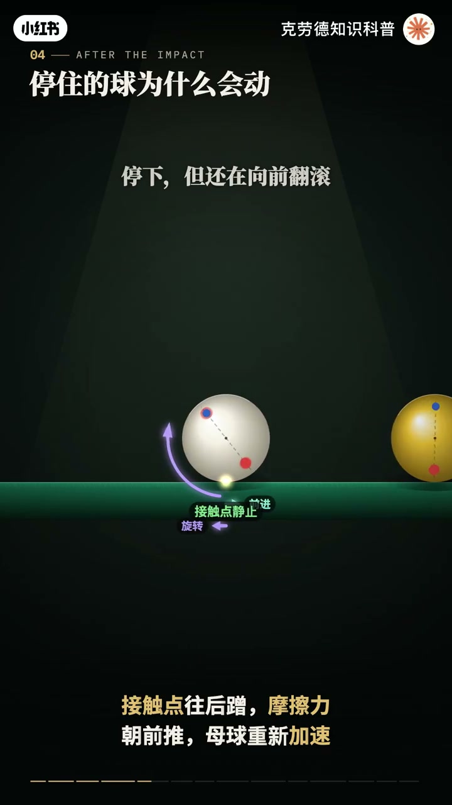
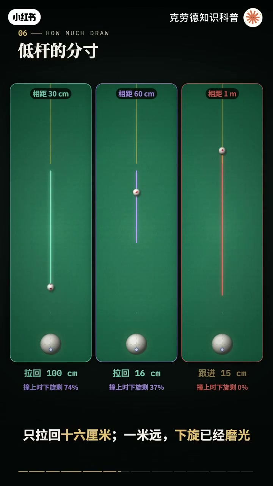
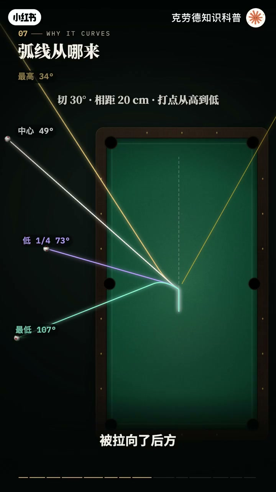
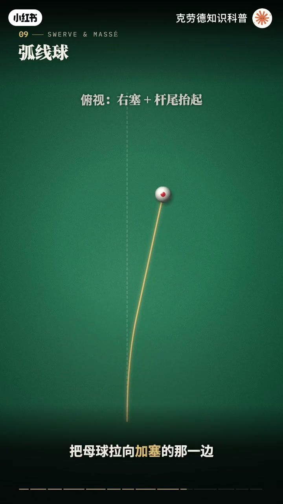
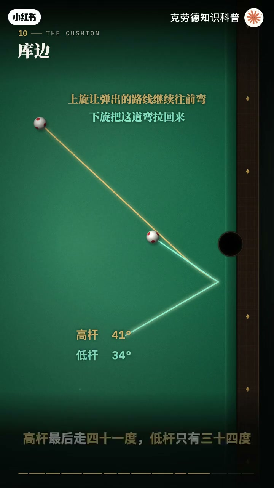
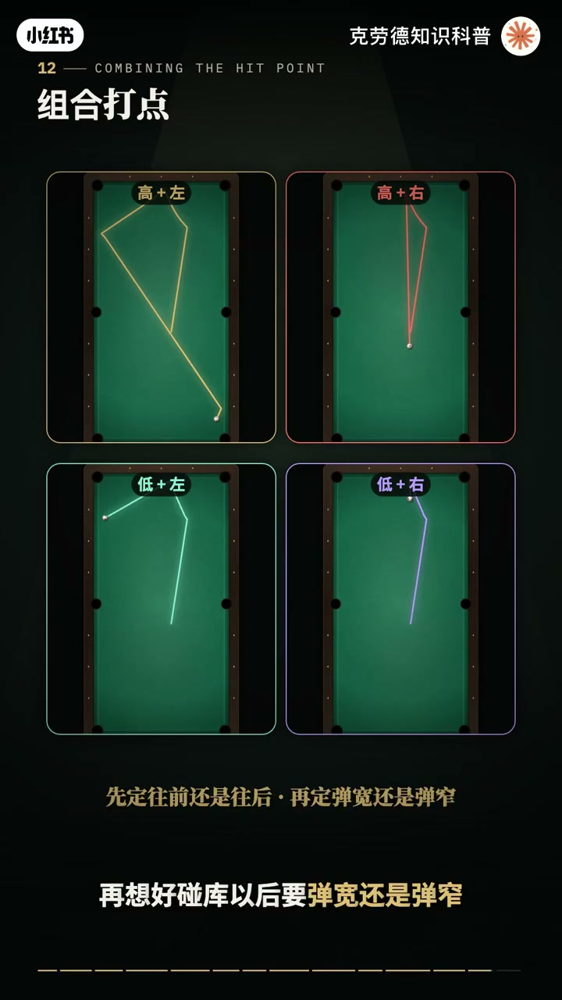

内容要点
「台球进阶原理，看懂台球的物理几何」教程要点：一颗台球170克 → 皮头和他接触的时间 → 只有千分之一秒左右 → 就在这一瞬间打高一点；详见正文。
知识结构
一颗台球170克
母球停住了
左塞和右塞完全对称
- 一颗台球170克
- 皮头和他接触的时间
- 只有千分之一秒左右
- 就在这一瞬间打高一点
- 他会追着目标球往前冲
一颗台球170克
00:00–02:32一颗台球170克
一颗台球170克；皮头和他接触的时间；只有千分之一秒左右；就在这一瞬间打高一点；他会追着目标球往前冲；打低一点他会倒着滚回来；打偏一点他还会拐弯；更奇怪的是；母球撞完目标球明明已经停住了；下一刻却又自己动了起来；这些现象背后只有两样东西；皮头的一推和台尼的摩擦；这一期不看结果；只看原因把每一个打点；每一种情况一次讲透；先看出竿的那一瞬间；皮头给母球的；是一个沿着球竿方向的推力；这个推力同时做了两件事；一是推着整颗球往前走；二是像扳手拧螺丝一样；让球转起来；转不转；取决于推力离球星有多远；推力穿过球星；力臂是零；球直走不转；打在中心上方；推力从球星上面经过；把球向前拧；这是上旋；打在中心下方；把球向后拧；这是下旋；力臂越长；转得越快；触感每秒两米；达在半径一半的位置；母球每秒要转将近14圈；而前进的速度；只看你推了多大力；和打在哪里几乎无关；速度和旋转；是两笔分开的帐；打点能偏多远；不是越偏越好；皮头碰到的球面；离中心越远；就越斜；打在半径四分之一的位置；球面斜了14度；打在一半的位置；斜了30度；打在60%的位置；斜了将近37度；皮头靠巧粉的摩擦；咬住球面；擦了巧粉的皮头；最多只能在31度左右的；斜面上站稳；超过这个角度；皮头就顺着斜面滑出去；力量传不进球里；这就是滑感；所以所有打点；不要花在半径一半的圈里；在这个圈里；打点越偏；旋转就越多；打在上下半个半径；旋转带来的速度；是前进速度的1.25倍；母球出干以后；接下来发生什么；全看一个点；球和台尼接触的那个点；这个点的速度；有两部分叠加；整颗球往前走的速度；加上旋转让底部往后甩的速度；两者正好抵消时；接触点相对台尼是静止的；这就是纯滚动；像车轮一样；几乎没有摩擦；打中心的球没有旋转；接触点跟着球一起往前滑；台尼的摩擦力朝后拽住它；一边让球减速；一边因为拽在球的底部；把球向前搓转；速度越来越慢；转速越来越快；直到两者对上；滑动停止；每秒两米打中心；母球要滑半米；才变成纯滚动；速度只剩7分之5；打在中心上方；五分之二半径的位置；出干时；转速就正好匹配；接触点从一开始；就是静止的；一点都不滑；打得再高一点；转得比走得快；接触点反而往后蹭；摩擦力变成朝前推；母球出干以后；还会自己加速；大约7%；撞上目标球的那一刻；两颗球之间；几乎没有摩擦；母球的速度；被整颗浇了出去；可它身上的旋转；一点都带不走；如果撞上去时；母球正好不转；速度浇完；就什么都不剩；母球停在原地；这就是定干；如果带着上旋；母球停下的那一刻；还在向前翻滚；接触点往后蹭；摩擦力朝前推；母球重新加速；跟着往前走；这就是高干；带着下旋就反过来；接触点往前蹭；摩擦力朝后拉；把母球拽回来；这就是定干；所以；抬头的问题有了答案


02:30–04:52母球停住了
母球停住了；旋转还在；是台尼的摩擦；让它重新动了起来；这也是远抬定干难的原因；下旋在路上；一直被摩擦磨掉；每秒2米；达最低点；走25厘米；还剩7成多；走半米；只剩4成；走到70多厘米；就完全磨光了；知道了原理；再来看上下打点；到底差多少；先看高干；直线撞球；每秒2米；母球离目标球25厘米；打中心；撞上时；几乎还没转起来；母球只跟进几厘米；打在中心上方5分之1半径；跟进80厘米；5分之2半径；1米半；半个半径；1米7；但距离一远；情况就变了；母球离目标球60厘米时；打中心也会跟进70多厘米；因为打中心的球；滑行半米；就变成了纯滚动；撞上去的时候；已经带着上旋；所以；远距离的中干；本质上就是高干；想让它停住；就得打得更低；再看低干；同样每秒2米；打在最低的半个半径；离目标球30厘米；母球拉回1米；60厘米；只拉回16厘米；一米远；下旋已经磨光；母球反而往前；蹲了15厘米；打点的高低也一样；离60厘米时；打低五分之一半径；母球还往前跟8厘米；打低三分之一多一点；正好停住；打到最低；才拉回16厘米；远抬想拉回来；要靠速度；初干速度提到每秒3米；一米远；照样能拉回1米；因为下旋还没被磨光；就已经撞上了目标球；切球时；母球撞完；沿着切线离开；可如果它带着高干或低干；走的不是直线；而是一道弧线；原因还是接触点；撞完以后；母球的速度；转了一个方向；旋转却还朝着原来的方向；接触点的滑动方向；和行进方向不再一致；摩擦力就斜着拉住母球；而且方向一直不变；一个方向不变的力；拉着一个运动的物体；路线就是一条抛物线；和抛出去的石头一样；只不过拉它的不是重力；是摩擦力；等滑动停止；母球变成纯滚动；弧线就结束了；之后走直线；高干往前弯；低干往回弯；打得越快；弧线越晚才弯过来；把打点从高到低排开；同样切30度；离目标球20厘米；打最高母球偏34度；打中心49度；打低四分之一半径73度；打到最低107度；被拉向了后方；接下来是加塞；打母球的左边或右边；母球会绕着竖直的轴旋转；奇怪的是；这种旋转在台面上；几乎不改变路线；因为竖直的转轴；正好穿过球；和台尼的接触点；接触点就在转轴上；转得再快；它自己也不动；相对台尼没有滑动；摩擦力就不会把球往旁边拉；可是加了右塞的母球；竹竿就往左偏一点；这叫挤压偏移；原因不在台尼；在皮头；皮头打在母球右侧；半径一半的地方；球面在这里是斜的；斜了30度；皮头顶在斜面上；球被往左推；皮头被往右推开；杆头越重越推不开；球就被推得越偏；普通球杆偏大约2度；一米半偏出5厘米多；轻杆头的低偏移球杆；只偏1.4度


04:50–07:34左塞和右塞完全对称
左塞和右塞完全对称；右塞往左偏；左塞往右偏；偏多少也和塞成正比；打四分之一半径；一米半偏2.8厘米；打一半偏5.5厘米；那加塞什么时候会拐弯；答案是；竿尾抬起来的时候；球杆斜着向下击球；推力不再是水平的；母球的转轴也跟着倾斜；斜的转轴不再穿过接触点；接触点被旋转带着往侧面甩；抬腻的摩擦力朝反方向拉；把母球拉向加塞的那边；于是右塞的母球；先被挤压片一推向左边；再被摩擦慢慢拉回右边；走出一道弯；竿尾抬得越高；转轴越斜；弯得越厉害；几乎竖着打；就是闸杆；母球能绕过挡在前面的球；再看裤边；裤边胶条的高度；比球心高一点；转裤时正好顶在球心上方；这样裤边的推力是斜着朝下的；把球压在台面上；球就不会跳起来；加了塞的球转裤；接触点会贴着裤边横着蹭；裤边的摩擦力朝反方向推球；改变它弹出的角度；顺塞时；摩擦把球沿着裤边往前推；反弹角变大；逆塞把它往回拽；反弹角变小；引擎里同样30度转裤；不加塞；最后的路线是41度；顺塞；55度；逆塞；只有16度；塞越多；变化越大；同样30度转裤；逆塞一半；16度；逆塞四分之一；31度；不加塞；41度；顺塞四分之一；49度；顺塞一半；55度；高低杆也会影响裤边；转裤以后剩下的上旋；会让路线继续往前弯；下旋；则会把这道弯拉回来；同样30度转裤；高杆最后走41度；低杆只有34度；最后是两颗球之间的摩擦；切球时；在两颗球接触的地方；母球的表面会贴着目标；球横着蹭过去；这一层；摩擦力就把目标球；往母球前进的方向带偏一点；切30度；每秒一米的定杆；目标球偏了将近两度；解决办法；是给母球加一点外侧塞；母球表面反着转；正好抵消这一层；两颗球就像一对咬合的齿轮；一起转动；不再滑动；引擎里加上五分之一半径的外侧塞；偏差几乎变成了零；这就是齿轮效应名字的由来；反过来；内侧塞会让偏差更大；同样的球；加五分之一半径的内侧塞；目标球偏了2.4度；外侧塞加过头；又会往反方向偏；最后；把上下和左右组合起来；九个打点；其实就是两笔杖叠在一起；上下这笔杖；决定母球转完以后；往前还是往后；高杆往前弯；低杆往回拉；左右这笔杖；决定母球碰到裤边以后怎么弹；顺塞弹得开；逆塞弹得窄；同时还带来挤压偏移；和齿轮效应；看这一杆；同一个切球；高杆左塞；还是弹窄；最后；把这一期的原理收一收；推力决定速度；力臂决定旋转；打点不能超过半径的一半；接触点在滑；摩擦就在改；滑动停止；才是纯滚动；撞击交出速度；留下旋转；距离和速度；决定撞上时；还剩多少旋转；转轴穿过接触点；塞不拐弯；挤压偏移；弧线；裤边和齿轮效应；才是塞起作用的地方；台球没有魔法；只有一推和一路的摩擦




口述/画面要点（40段）
结合 Whisper medium 与画面大字整理；专有名词已校对。
一颗台球170克
皮头和他接触的时间
只有千分之一秒左右
就在这一瞬间打高一点
他会追着目标球往前冲
打低一点他会倒着滚回来
打偏一点他还会拐弯
更奇怪的是
母球撞完目标球明明已经停住了
下一刻却又自己动了起来
这些现象背后只有两样东西
皮头的一推和台尼的摩擦
这一期不看结果
只看原因把每一个打点
每一种情况一次讲透
先看出竿的那一瞬间
皮头给母球的
是一个沿着球竿方向的推力
这个推力同时做了两件事
一是推着整颗球往前走
二是像扳手拧螺丝一样
让球转起来
转不转
取决于推力离球星有多远
推力穿过球星
力臂是零
球直走不转
打在中心上方
推力从球星上面经过
把球向前拧
这是上旋
打在中心下方
把球向后拧
这是下旋
力臂越长
转得越快
触感每秒两米
达在半径一半的位置
母球每秒要转将近14圈
而前进的速度